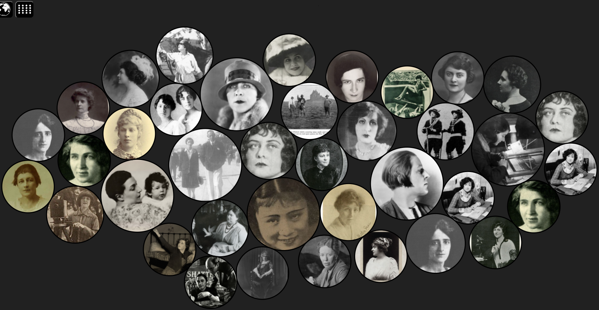

Pioneer of the Day
Usually this window shows a pioneer who was born on today's date.
Unfortunately, there seems to be no such woman in the WFPP
database.
If you know of a pioneer to whom this applies, please support the
project by expanding the data.
MAP
Women have been working in film production all over the world. Many
pioneers had various jobs in multiple countries. For an interactive
overview click the button below.

CLUSTER
Women held a variety of different positions in early film
industries. Explore the different types via cluster visualizations,in addition to the many countries
the woman worked in.

TIMELINE
Do you want to find out when the pioneers lived? Just click the button below
for an interactive timeline, which also allows you to add
custom events in order to put the individual biographies into a greater
historical context.

DENDROGRAM
Women have had a big influence in filmm history since the very beginning.
This dendrogram displays the numerous profession they hold in addition
to the many subcategories. For a hierarchial overview click the button below.